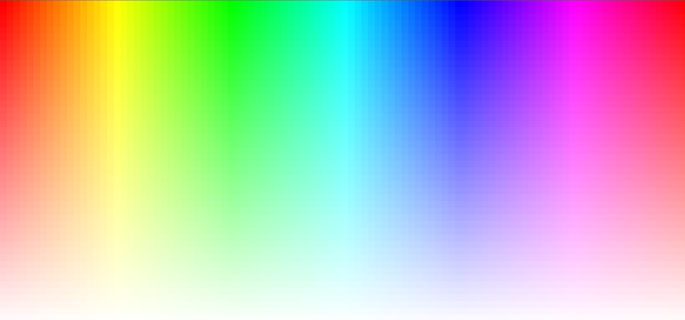

Live Demo
HSB grid
A nested double loop to display all ranges from HSB.
Live Demo
Color Wheel
A color wheel using cos & sin of an angle to draw a triangle fan.
 Live Demo
Live Demo
Scaling objects using map functions
Mapping mouse positions x & y to between the canvas by scaling an interactive graphic.
 Live Demo
Live Demo
Atan2 Implementation
Using the inverse of tangent to calculate the rotation towards the mouse position.
Live Demo
Vertex painter
A vertex painter, using a function to draw triangles with points picked by the user.
Live Demo
Radial Fan
A medium-canvas displaying the HSB Colour Model in a radial fan pattern. Also intractable.